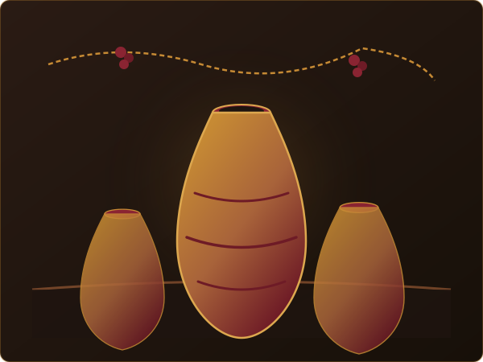

მოგესალმებით ცისკარის მარანში! · 1932 წლიდან
ღვინო, რომელსაც
მიწა ინახავს
ოთხი თაობის განმავლობაში ჩვენი ოჯახი დებს
ყურძენს თიხის ქვევრში და ელოდება —
ისე, როგორც პაპაჩვენმა გვასწავლა.
მარანი ღიაა სტუმრებისთვის, ვისაც სურს ნახოს,
გასინჯოს და გაიგოს,
რატომ არის
ეს მეთოდი მსოფლიო მემკვიდრეობა.

ჩვენი ღვინოები
ვამზადებთ მხოლოდ იმას, რასაც საკუთარი ვენახი გვაძლევს — უმეტესწილად რქაწითელს და საფერავს, ტრადიციული, არაფილტრული მეთოდით.
-
2024
რქაწითელი, ქვევრის ღვინო
ქარვისფერი, ექვსთვიანი ჭაჭაზე დადუღება
-
2022
საფერავი, ძველი ვაზი
40 წლის ვაზებიდან, სქელი და მკვრივი
-
2025
ცისკარი როზე
მსუბუქი, საზაფხულო კუფშენით
-
2019
მარნის რეზერვი
შერჩეული კასრი, შეზღუდული რაოდენობა
„ღვინო არ კეთდება — ის უბრალოდ ხდება, თუ მიწას და დროს არ შეაწუხებ.“— ვანო, მარნის მეღვინე, მესამე თაობა
რას გთავაზობთ მარანში
სტუმრობა შეგიძლიათ დაგეგმოთ ერთ საათში ან მთელი დღით — ტურიდან საოჯახო სუფრამდე.
დეგუსტაცია
სამი ღვინის დაგემოვნება მარნის სარდაფში, ყველისა და პურის თანხლებით.
მარნის ტური
ვენახიდან ქვევრამდე — გავიაროთ გზა, რომელსაც ყურძენი გადის, სანამ ღვინოდ იქცევა.
სამარნო სუფრა
ღამის ვახშამი გრძელ ხის მაგიდასთან, საოჯახო კერძებით და ღვინის თანხლებით.